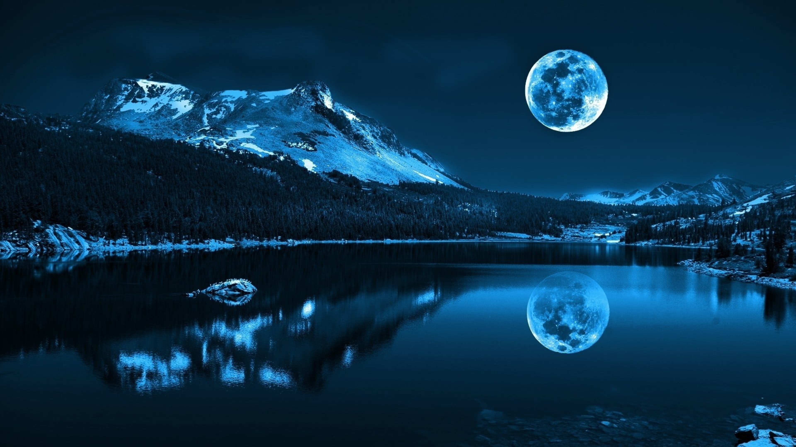
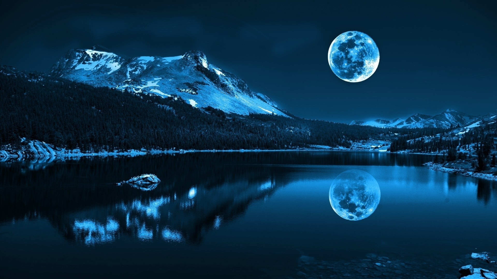

Crazy World
The Sanskrit word "Manasarovar" (मानसरोवर) is a combination of two Sanskrit words; "Mānas" (मानस्) meaning "mind (in its widest sense as applied to all the mental powers), intellect, intelligence, understanding, perception, sense, conscience" while "sarovara" (सरोवर) means "a lake or a large pond deep enough for a lotus"
It is located about 50 kilometers to the northwest of Nepal, about 100 kilometers east of Uttarakhand, and in the southwest region of Tibet . Lake Manasarovar lies at 4,590 m (15,060 ft) above mean sea level, a relatively high elevation for a large fresh water lake on the mostly saline lake-studded Tibetan Plateau. It freezes in the winter. According to Brockman, it is one of the highest freshwater lakes in Asia ( highest being the lake tilicho in Nepal at altitude of 4919 m). Lake Manasarovar is relatively round in shape with the circumference of 88 km (54.7 mi). Its depth reaches a maximum of 90 m (300 ft) and its surface area is 320 km2 (123.6 sq mi). It is connected to nearby Lake Rakshastal by the natural Ganga Chhu channel. Lake Manasarovar is near the source of the Sutlej, which is the easternmost large tributary of the Indus. Nearby are the sources of the Brahmaputra River, the Indus River, and the Karnali, an important tributary of the Ganges. Lake Manasarovar overflows into Lake Rakshastal which is a salt-water endorheic lake. When the level of Lake Rakshastal matched that of Lake Manasarovar, these (very narrowly) combined lakes overflowed into the Sutlej basin. In May 2020, India inaugurated a new 80 km long motorable road from Dharchula to Lipulekh Pass along the India-China border under the geostrategic India-China Border Roads project to the Kailas-Manasarovar in Tibet.

 
